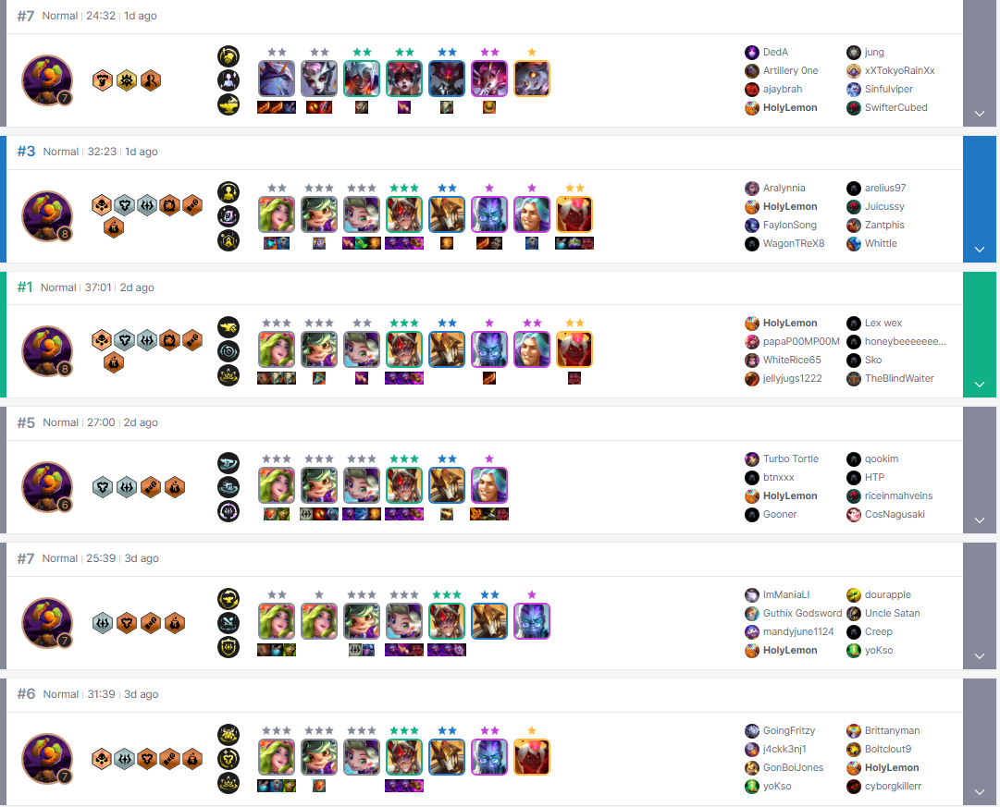

It all started on a faithful day, August 30th 2024 at the VERY very normal hours of 3am where my boyfriend asked "Hey do you want to play TFT?". Foolishly I replied with yes, and that is where my TFT Adventures, and Addictions begins. On August 31st, was the first time I personally loaded the game up, and upon looking at the TFT store, I was blindsided and spent $11 on an Arena skin cuz it was like really pretty and stuff(Pst I got told off for spending money on the game shortly after). After equiping the arena skin, I went on to play 8 tft games over the course of the next 6 hours(I lost track of time). It is now September 13 2024, so around 2 weeks has passed, and I have consistently played atleast 2 tft games a day, as a one trick pony to what I would say is the best TFT Team Comp in this set Scholar Stars. But TFT has such ass rng, and definetly not a skill issue on my part, where they wont give me the champions I need like where is my 3 star Ahri, or Lillia, and why cant I get no Tears or Cloaks, why does this game keep giving me bows, what am I gonna use a bow for on AP Champions(I am definitely not tilted). Well thats has been my journey on TFT so far. Below are the Scholar Stars Team Comp and their items
| Champions | Items |
|---|---|
| Ahri | Jeweled Gauntlet, Rabadon Deathcap, Blue Buff |
| Zoe | Nashor's Tooth, Spear of Shojin, Hand of Justice |
| Lillia | Protector's Vow, Gargoyle Stoneplate, Dragon's Claw |
This is my TFT match history of my last 6 games
